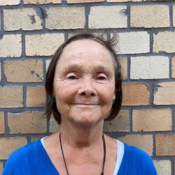

Sedan 2013 är jag, Inger Åkerlund, certifierad lärare i Kundaliniyoga och har sedan dess undervisat på olika håll i Göteborg. Från augusti 2018 håller jag till på Yoga Treats, en yogastudio på Kastellgatan 22, i Linnéstaden.
Alltsedan jag började utöva Kundaliniyoga 2011, har yoga funnits med så gott som dagligen i mitt liv. Yogan ger mig; förutom en fysisk träning för bibehållen styrka och rörlighet, en stark inre upplevelse, en känsla av mening, energi och underlättar i vardagen.
Steg 1 på min kundaliniyogalärarutbildning gick jag i Göteborg med Sada Sat Singh som huvudlärare (220 timmar). Steg 2-utbildningen för Kundaliniyogalärare innehåller fem moduler (500 timmar) och dessa har jag gått för olika lärare i Båstad, Grekland och Karlstad.
Jag är utbildad lärare i Yoga på stol, Gongspel, Breathwalk - gående yoga, Medicinsk yoga för kundaliniyogalärare, Barnyoga och Steg 1 utbildad i Sat Nam Rasayan - en yogisk healingteknik.
Sedan hösten 2020 undervisar jag i Sensing Yinyoga och Sensing Yinyoga på stol och har genomgått utbildning och certifiering på Connective Institute i Kungsbacka (50 timmar + 1 dag) för Mia Elmlund.
Våren 2021 genomgick jag utbildning och certifiering i Yoga Nidra (30 timmar) för Jennie Wadsten och Melanie Cooper.
Maj 2019 avslutade jag min anställning som specialpedagog i Göteborgs stad och har sedan dess utökat min yogaverksamhet. På Yoga Treats har jag Kundaliniyoga på måndagskvällar och Sensing Yin torsdagskvällar. Från 2021 erbjuder jag såväl Kundaliniyoga, Sensing Yin och Yoga Nidra online via ZOOM. Dessutom finns möjlighet att boka Yoga och Breathwalk för företag, föreningar och andra grupper.
Välkommen att höra av dig om du undrar över något eller vill veta mer eller kanske för att få inspiration att kunna ta in yogan mer i din vardag.
Kastellgatan 22, Linnéstaden, Göteborg
Kundaliniyoga ~ är en dynamisk yogaform som består av fysiska övningar, andningstekniker, meditationer och mantran, det handlar om en fysisk, mental och andlig träning. Vi går igenom och utför olika yogaövningar och yogapass (kriyor), fokuserar på andningen och vid varje tillfälle ingår avslappning, oftast med gong, och meditation. Styrka och flexibilitet i stillhet och rörelse, för kropp och sinne. I klasserna använder vi ullmattor, meditationskuddar och filtar.
Sensing Yinyoga ~ i liggande och sittande yinpositioner använder vi rörelser såsom vaggande, gungningar, spiralande och skakningar för att närma oss kroppens bindväv och nervsystemet. Med små små rörelser inför, under, efter, mellan positionerna startas en återfuktning i våra system - det är naturliga rörelser som lugnar och balanserar och vi lär oss lyssna inåt och att röra oss på kroppens villkor. I klasserna använder vi ullmattor, filtar, klossar och yogabolster.
Yoga Nidra ~ ‘Yogisk sömn’ - en guidad djupavslappning för inre läkning, mellan vakenhet och sömn, kroppen sover men sinnet är vaket. Kan också beskrivas som en form av meditation som oftast utförs liggande på rygg, kan lugna ner tankar och förbättra din sömn.
KURSER PÅ YOGA TREATS
24 januari-7 mars Kursavgift 1225 kr / 7 gånger
14 mars-2 maj Kursavgift 1225 kr / 7 gånger (uppehåll 18 april)
Hela perioden 24 januari-2 maj Kursavgift 2310 kr / 14 gånger
Drop in vid enstaka tillfälle är möjligt i mån av plats - anmälan behövs Kostnad: 200 kr. Betalas innan klass eller kontant.
KURSER PÅ YOGA TREATS
20 januari-3 mars Kursavgift 1050 kr / 7 gånger
10 mars-5 maj Kursavgift 1050 kr / 7 gånger (uppehåll 24 mars och 14 april)
Hela perioden 20 januari-5 maj Kursavgift 1960 kr / 14 gånger
Drop in vid enstaka tillfälle är möjligt i mån av plats - anmälan behövs Kostnad: 180 kr. Betalas innan klass eller kontant
Obs! Minst 4 deltagare behövs för att kurs ska starta.
OBS: Vi fortsätter att visa hänsyn till varandra genom att stanna hemma när vi är sjuka samt håller avstånd i hall, omklädningsrum och i yogasalen.
Med reservation för ändringar.
i.e.akerlund@telia.com
I din anmälan: Vald kurs/kurser, ditt namn och telefonnummer.
Betalning senast en vecka före kursstart
Betalning: Swish 1234668356 eller plusgiro 689681-5
Inger Åkerlund
i.e.akerlund@telia.com
0701-105750
Vi behöver spara och behandla personuppgifter om dig, så som namn, e-postadress, telefonnummer. Syftet med en sådan behandling är för att kunna hantera bokföring. Vi har fått dina uppgifter genom kursanmälan. Vi tillämpar vid var tid gällande integritetslagstiftning vid all behandling av personuppgifter. Den rättsliga grunden för att behandla dina personuppgifter är samtycke. Du har när som helst rätt att återkalla ditt samtycke till behandlingen. Ett återkallande påverkar inte lagligheten av behandlingen innan samtycket återkallades. Dina uppgifter kommer att sparas så länge du deltar i vår kursverksamhet och vill fortsätta få information om verksamheten. De personuppgifter vi behandlar om dig delas med Skatteverket och Googles formulärtjänst. Vi kan även komma att dela dina personuppgifter med en tredje part, förutsatt att vi är skyldiga att göra så enligt lag. Personuppgiftsansvarig är Inger Åkerlund. Du har rätt att kontakta mig om du vill ha ut information om de uppgifter vi har om dig, för att begära rättelse, överföring eller för att begära att vi begränsar behandlingen, för att göra invändningar eller begära radering av dina uppgifter. Detta gör du enklast genom att kontakta oss på mail. Du når vårt dataskyddsombud på i.e.akerlund@telia.com. Om du har klagomål på vår behandling av dina personuppgifter har du rätt att inge klagomål till tillsynsmyndigheten Datainspektionen.